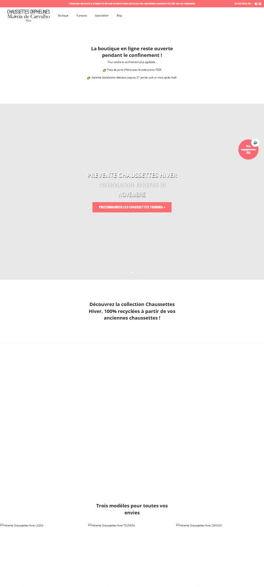
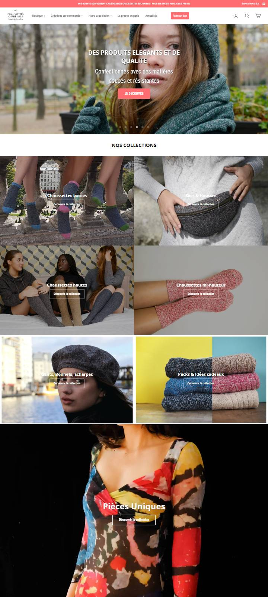

O que a loja fazia quando vendia mais
Comparação da página inicial da loja em cada fim de ano, de 2019 a hoje, pelas cópias guardadas no archive.org. Os preços das meias não mudaram desde 2020 (LASKA 25 €, TOUNDRA 29 €, CANCAN 39 €). O que mudou foram as razões para comprar.
Em 2019 a 2021, a loja dava ao cliente quatro razões para comprar já: frete grátis fácil de alcançar (45 € e depois 65 €), desconto grande por quantidade (até −20 % a partir de 3 pares), troca grátis e uma etiqueta para devolver as meias velhas e reciclá-las, de presente.
A partir de dezembro de 2022, as quatro foram retiradas ou encolheram: frete grátis só a partir de 150 €, troca paga pelo cliente, a etiqueta sumiu, e o desconto caiu para 10 % (e para 5 % em 2024). A página inicial também deixou de mostrar preços.
A proposta de layout (maquetes) traz de volta essas razões, numa loja mais limpa e rápida. As quatro são decisões da Marcia, porque mexem em custo.
Ano a ano
| Dez. 2019 | Nov. 2020 | Nov. 2021 | Nov. 2022 | Dez. 2022 | Dez. 2023 | Nov. 2024 | Dez. 2025 e hoje | |
|---|---|---|---|---|---|---|---|---|
| Frete grátis a partir de | 45 € | 45 €e código FREE: frete grátis sem mínimo | 65 € | 65 € | 150 € | 150 € | 150 € | 150 €pedido médio hoje: 80 € |
| Etiqueta para devolver as meias velhas | Sim, a partir de 45 €« Nouveau : enveloppe retour » | Sim, a partir de 45 € | Sim | Não aparece mais | Não | Não | Não | Não |
| Troca e devolução | – | Grátisgarantia estendida até 31/01 no Natal | Grátis na França | Por conta do cliente | Por conta do cliente | Por conta do cliente | Por conta do cliente | Por conta do cliente |
| Desconto por quantidade | Packs com desconto3 LASKA: 60 € em vez de 75 € | Conjuntos −10 a −20 %e na página das meias: −20 % (3 pares), −30 % (10 pares), automático | −20 % a partir de 3 pares | −10 % | −10 % | −10 % | −5 % | −5 % |
| Produtos com preço na página inicial | Sim, 3 kits de Natal | Sim, 6: pré-vendas e conjuntos de inverno | Um pack, sem preço | Um pack, sem preço | Um pack, sem preço | Não | Não | Não |
| Primeira imagem em dezembro | Natal: « cadeaux de Noël éthiques » | Pré-venda das meias de inverno, criadas com os clientes | Coleção de roupas de verão | Cartões-presente | Cartões-presente | « Une collection unique et engagée » | Meia azul-branco-vermelho « pour soutenir nos athlètes » | A mesma meia dos atletas, um ano depoishoje: « Des produits élégants et de qualité » |
| Conteúdo novo | Blog ativo, posição sobre a Black Friday | 3 artigos em nov.-dez., guia de presentes por orçamento | Último artigo: out. 2021 | Nada novo desde 2021 | Nada novo | – | Artigo em out. 2024 | Último artigo: abr. 2025 |
ajudava a vendertirado ou piorado
A diferença na primeira tela


Os clientes falavam da etiqueta
Nas avaliações antigas (Stamped), a etiqueta de devolução aparece sozinha, sem ninguém perguntar. É a única coisa que nenhuma outra loja de meias oferece.
« Belle idée, beau produit, site clair et livraison express, cerise sur le gâteau, l’enveloppe retour de chaussettes orphelines. »
« Elles sont livrées rapidement avec un bon de retour pour renvoyer des chaussettes usagées. »
« Déçue de ne pas avoir reçu l’enveloppe retour « chaussettes usagées ». »
O que falta para vender igual ou mais
- Frete grátis alcançável D1Voltar para perto do pedido médio (60 a 65 €), com « faltam X € » no carrinho. Com 150 €, quase ninguém chega.
- Desconto por quantidade forte e visível D3Era −20 % a partir de 3 pares; hoje é −5 %. O cliente já compra ~3 itens: um desconto que se vê em cada página empurra para 3 e 5 pares.
- A etiqueta de devolução de volta D11, novaCustava pouco mais de 2 € por pedido (dito na própria página de 2021). Pode voltar só a partir do frete grátis, para caber no custo.
- Troca grátis, com prazo maior no Natal D12, novaTira o medo de errar o tamanho, sobretudo em presentes.
- Produtos, preços e ofertas de Natal na página inicialÉ o que as maquetes fazem. Não depende de custo, só do tema.
- Uma novidade de inverno por ano, em pré-vendaEm 2020, LASKA, TOUNDRA e CANCAN foram lançadas em pré-venda, criadas com a participação dos clientes (« le compteur des préventes a explosé », dizia o blog). A LASKA é até hoje a meia mais vendida da loja.
- Conteúdo e e-mails regulares D9Em 2020 havia um guia de presentes por orçamento e vários artigos por mês. A newsletter ainda trouxe 2 681 visitas entre set. 2024 e set. 2025; no último ano, 247.
- Loja rápida no celularJá está no plano (limpeza do tema e tema novo). O celular é 64 % das visitas e converte um terço do computador.
O que não volta
Em 2020 e 2021, os confinamentos levaram muita gente a comprar online: parte do pico veio de fora, para todo o comércio. E as visitas pelo Google caíram 43 % no último ano, o que se recupera devagar (títulos, descrições, conteúdo). Por isso o objetivo realista é tirar mais vendas de cada visita, que é o que as quatro razões e o layout fazem.
Falta confirmar com números. Esta comparação mostra o que a loja fazia, não quanto vendia. Para saber qual ano foi o melhor e medir o efeito de cada mudança, falta o relatório do Shopify « Ventes au fil du temps », de 01/01/2018 até hoje, por mês (pedido ao Regis em 03/11/2026). Indício até lá: das avaliações antigas que recuperamos, 61 são de 2021, 21 de 2020 e 22 de 2022.
Fontes: cópias da página inicial no archive.org (dez. 2019, nov. 2020, nov. e dez. 2021, nov. e dez. 2022, dez. 2023, nov. e dez. 2024, nov. e dez. 2025) e da página da LASKA (jan. 2021 e jul. 2025), extraídas por extrair-wayback.mjs (texto em texto/) e capturar-wayback.mjs (telas em capturas/); avaliações do Stamped em site/avaliacoes/; dados do Shopify em analise-ecommerce/.